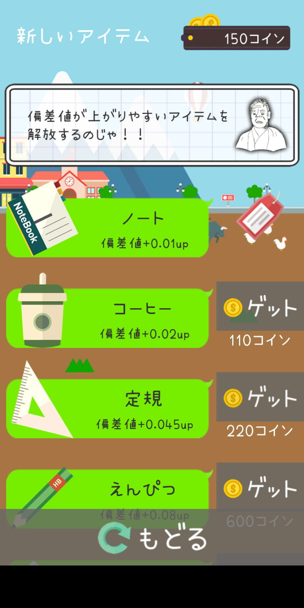

けいおうギャル 人気大学に合格!
OS：Android 2.3.3以上/iOS 6.0以降
価格：基本無料（アプリ内購入あり）
突然いい大学をを目指すことにしたギャル。目指すのはあの「慶応大学」なのだが、彼女の偏差値は驚異の20。ビ○ギャルを彷彿とさせるが、各種ミニゲームで偏差値を上げて行きやる気を出してあげればなんとかなる……はず。
基本は勉強の助けとなるノートや定規といったアイテムをタップで拾って偏差値を上げていき、受験に挑むこととなる。その途中に稼いだコインでより効率のいいアイテムや他の大学の受験権利を手に入れていく。ナビゲートしてくれる「ゆきち」さんとギャルのやりとりも面白いので、ついつい続けてしまう作りだ。途中で挫折して偏差値が下がることもあるが、くじけず志望大学へ立ち向かおう。ちなみに、試験はクイズで解くのはプレイヤーだ。これって替え玉受験では？ と思わないでもないがギャルが可愛いのですべてアリだ。

このアプリの評価は？
＞＞「けいおうギャル 人気大学に合格!」(Google Play (App Store)
受験度 ★★★★☆
ミニゲーム度 ★★★★★
ギャルかわいい度 ★★★★★